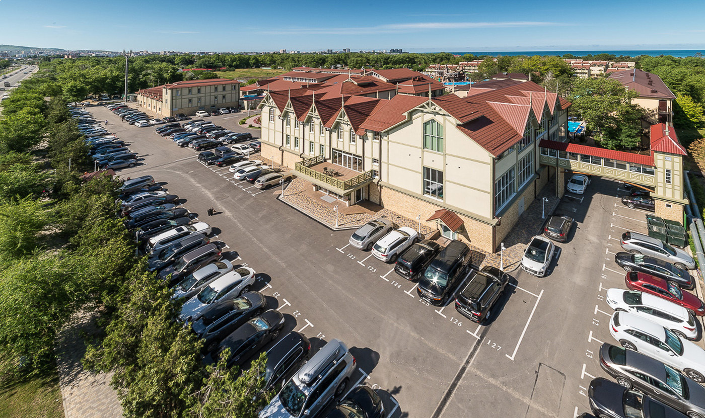
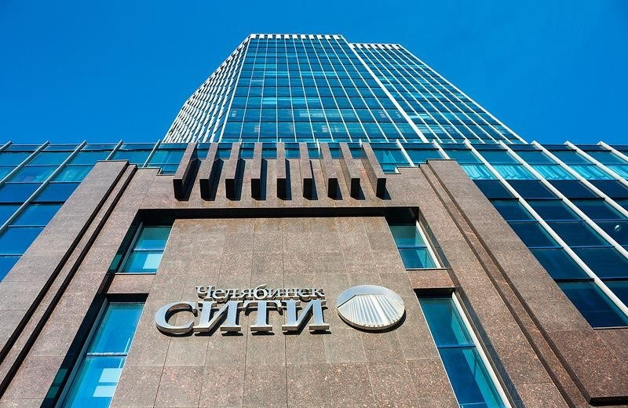

На парковке гостиницы "Radisson" в Адлере, установлена автоматическая парковочная система АП-ПРО.
Отель располагается по адресу Адлер, ул. 65 лет Победы, 10.
На парковке предусмотрена различная тарификация для гостей проживающих в отеле и разовых пользователей парковки.
Подобная тарификация позволяет разгружать парковочную зону от нежелательных клиентов и создает комфортные условия
для парковки гостей отеля. Оборудование выполнено в индивидуальном дизайне.
Паркомат, въездная и выездная стойки окрашены в лаконичный черный цвет и оснащены металлическими накладками.
Автоматическая парковочная система в гостинице Radisson состоит из следующих элементов:
- Въездная стойка АП-ПРО 1
- Выездная стойка АП-ПРО 2
- Паркомат АП-ПРО 3

На парковке гостиницы "Alean Family Resort & SPA Doville 5*", была произведена установка парковочной системы АП-ПРО.
Отель располагается в живописном районе г. Анапы, по адресу Симферопольское ш., 26
Установка парковочной системы помогла организовать порядок на парковке и безопасный паркинг для гостей и посетителей отеля.
Гостиница работает круглогодично, пожеланием заказчика к системе было разделение тарифов в зависимости от сезонов.
Возможности парковочной системы АП-ПРО позволили реализовать возможность установки различных тарифов в зависимости от
высокого и низкого сезонов. Для повышения безопасности парковочная зона была оснащена системой видеонаблюдения.
В состав парковочной системы вошло следующее оборудование:
- Въездная стойка АП-ПРО1
- Выездная стойка АП-ПРО2
- Паркомат АП-ПРО3
- Два шлагбаума
- Стойка акцептирования АП-ПРО7

На паркинге самого высокого здания в Челябинске, делового центра «Челябинск-СИТИ» (ул. Кирова, 159),
установлена автоматическая парковочная система АП-ПРО. Парковочный комплекс представляет собой
пятиэтажное наземное строение.
Система автоматической парковки позволяет устанавливать удобные часовые, суточные и месячные абонементы,
задавать ночные и дневные тарифы. Также на парковке предусмотрен бесплатный период в течение первого часа.
В проекте используется стандартный комплект оборудования для парковки:
- Въездной терминал АП-ПРО 1
- Выездной терминал АП-ПРО 2
- Паркомат АП-ПРО 3
